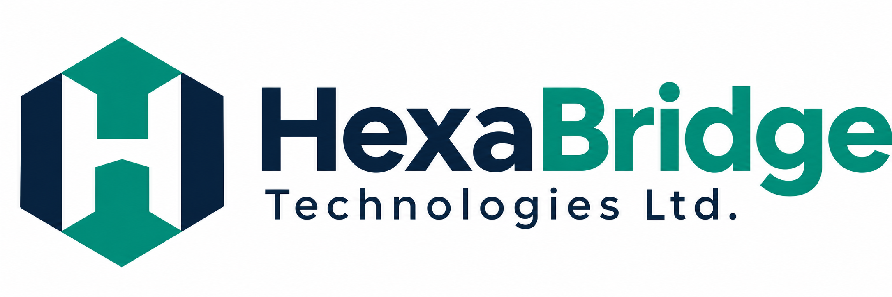

01▤
Payments & collections
SmartPOS, QR, electronic receipts and reconciliation.
MAKE EVERY TRANSACTION COUNT
LOCAL UNDERSTANDING. CONNECTED EXPERTISE.
Connecting organizations with the systems, expertise and partnerships to modernize essential services in Papua New Guinea.
Government ✳ Enterprises ✳ Institutions
01 / WHO WE ARE
Progress starts with understanding the place you’re building for.
HexaBridge Technologies Ltd is a PNG-focused technology solutions and systems integration company. We help government agencies, enterprises and institutions modernize operations and deliver accessible digital services.
We pair local project delivery and long-term support with specialist technology partners.
A more connected, efficient and digitally enabled PNG.
Practical, scalable technology through local delivery and trusted partnerships.
02 / OUR CAPABILITIES
From the services people use to the systems behind them. Technology that works together.
SmartPOS, QR, electronic receipts and reconciliation.
MAKE EVERY TRANSACTION COUNTLicensing, permits, public-service portals and collections.
BRING SERVICES CLOSERCustom software, workflow tools and service platforms.
BUILD AROUND YOUR OPERATIONSAPIs linking banking, business and legacy systems.
CONNECT WHAT MATTERSDeployment, hosting coordination and ongoing support.
KEEP MOVING FORWARDDashboards, reporting and intelligent workflows.
TURN INFORMATION INTO ACTIONIN FOCUS / DIGITAL COLLECTIONS
A multi-biller collection concept linking payment acceptance, e-receipts and reconciliation through authorized banking partners.
INITIAL APPLICATION FOCUS · ILLUSTRATIVE CONCEPTSmartPOS & QR payments
Electronic receipts
Connected reporting
Focus areas are illustrative. Bank acquiring and other regulated services require appropriate partner approvals.
03 / HOW WE DELIVER
The right capabilities for each challenge, brought together through a clear delivery model.
Local delivery & client support
PNG-facing project delivery and long-term support, with a locally accountable technology partner.
Software & integration
Specialist technology expertise connected to the needs of your organization.
Regulated payment services
Authorized banking partners for services that require appropriate approvals.
LET’S BUILD WHAT’S NEXT
Explore how HexaBridge’s capabilities can support your organization.
Get to know HexaBridge ↗Direct contact details will be added before launch.